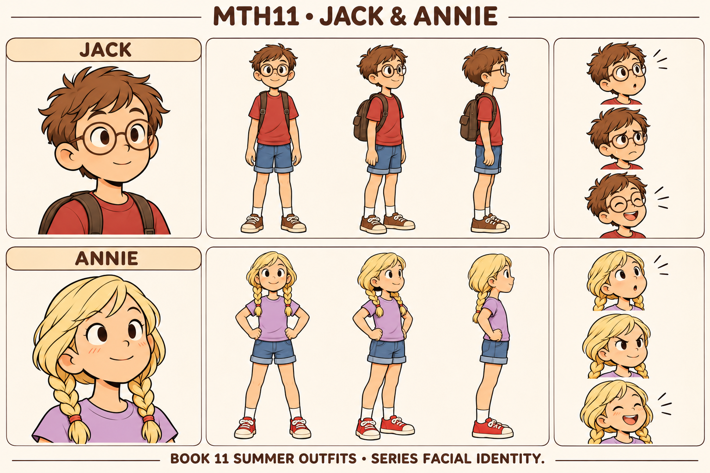
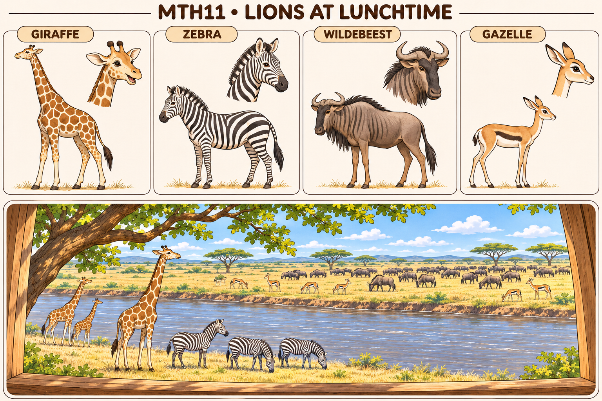
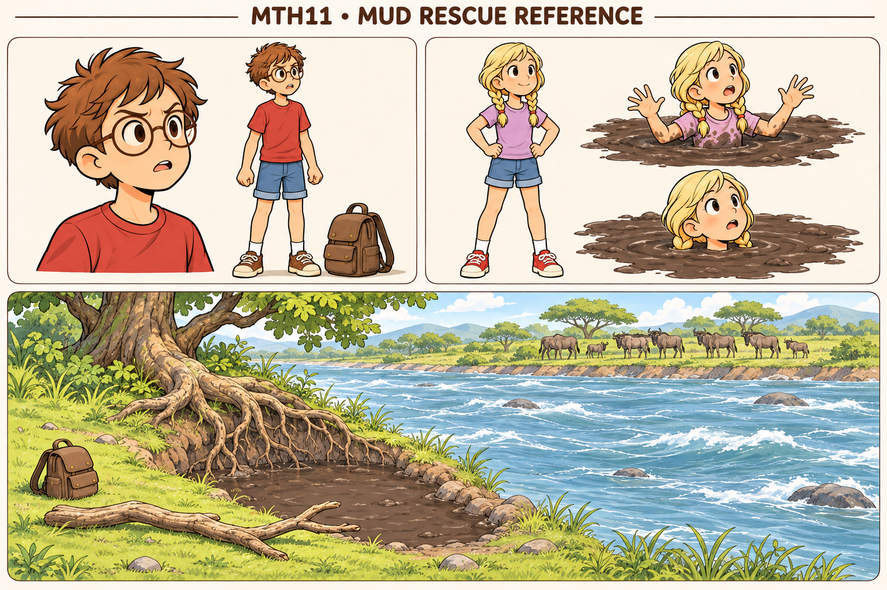
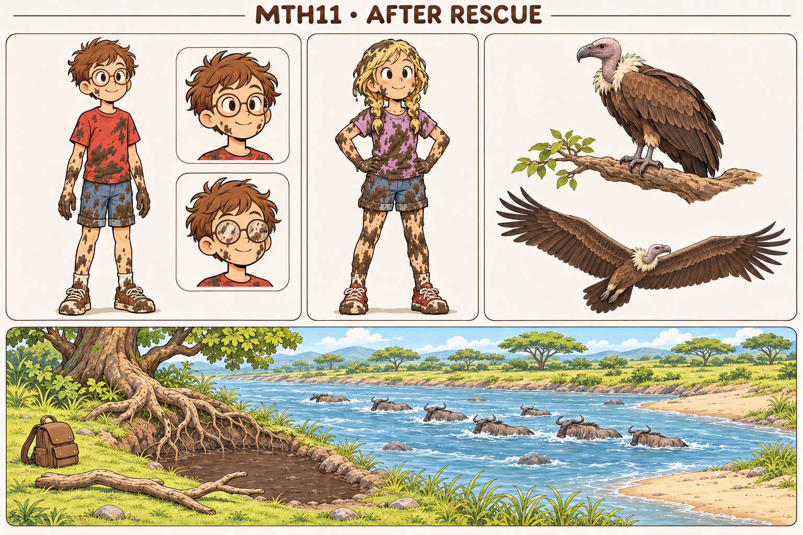

Lions at Lunchtime · 캐릭터 기준
Magic Tree House #11 · 원문에 맞춘 여름 복장과 4권의 얼굴·화풍 기준을 함께 적용합니다.
11권 전용 · Jack & Annie

잭: 둥근 안경, 갈색 머리, 반팔·반바지, 운동화, 배낭. 애니: 금발의 두 갈래 땋은 머리, 반팔·반바지, 운동화. 빨강·보라 의상 색은 시리즈 제작 선택이며 흑백 원작의 색상 정보가 아닙니다.
4권 공통 얼굴·화풍 참조
얼굴과 선·색감의 참조용입니다. 복장과 머리 모양은 위 11권 전용 시트를 우선합니다.

등장인물·동물 및 출현 제약
아이들·Morgan·가젤·나무집 참조 검수 완료. 전사와 나머지 동물 전용 시트는 해당 장면 제작 전에 보완합니다.
초반 참조 · Morgan / 가젤 / 나무집

Morgan의 초록 로브는 제작 색상입니다. 기존 두루마리는 두 개이며, 새 두루마리는 원문에 등장하는 시점부터 추가합니다. 가젤은 Frog Creek의 안내 개체와 아프리카 무리를 구분합니다.
2장 · 아프리카 동물과 강둑 배치

가까운 강둑: 기린·얼룩말. 반대편: 가젤·누. 아직 헤엄치지 않습니다. Morgan은 아프리카에 동행하지 않으며, 아이들은 깨끗하고 마른 여름 복장을 유지합니다.
새 두루마리: Morgan → Annie(1장) → Jack(2장 사다리로 나가기 전). 연구서는 Jack이 읽으며, 배낭은 아직 나무집 바닥에 있습니다.
4장 · 진흙 구조 상태·공간 참조

진흙 구덩이는 가까운 둑 옆이며 파란 강물과 구분됩니다. 애니는 가슴에서 턱 높이까지 잠기고 얼굴·손은 드러납니다. 잭은 배낭을 마른 둑에 내려놓고 나뭇가지를 사용합니다. 구출 후의 진흙 상태나 독수리는 원문 등장 시점부터 별도로 적용합니다.
4–5장 · 구출 이후와 독수리

0087 구출 이후 두 아이의 옷·손·신발은 진흙 상태를 유지합니다. 잭이 안경을 만진 뒤 렌즈 얼룩이 생깁니다. 배낭은 강둑에 남아 있고 5장 후속 장면에서 회수합니다. 독수리는 한 마리이며, 하이에나는 아직 등장하지 않습니다.
5장 시작: 애니는 같은 가까운 강둑을 따라 깨끗한 모래 착륙지로 이동해 누를 유도합니다. 강을 건너지 않습니다. 공간 시트보다 실제 원문의 이동 방향과 장면별 지시를 우선합니다.
BOOK 11 SOURCE-REVIEWED CHARACTER AND CONTINUITY REFERENCE Character ID: MTH-JACK Name: Jack Traits: eight-and-a-half-year-old boy; short brown hair; large round glasses; red short-sleeve shirt; blue denim shorts; brown sneakers; cautious, observant posture Book override: Book 11 original illustrations: short-sleeve shirt, shorts and sneakers. Jack keeps round glasses and short dark hair; Annie has two braids. Preserve series facial identity; override default long sleeves/jeans or bob hair for this book. Character ID: MTH-ANNIE Name: Annie Traits: seven-year-old girl; blonde hair in two braids; lavender T-shirt; denim shorts; red sneakers; energetic, fearless posture Book override: Book 11 original illustrations: short-sleeve shirt, shorts and sneakers. Jack keeps round glasses and short dark hair; Annie has two braids. Preserve series facial identity; override default long sleeves/jeans or bob hair for this book. Character ID: MTH04-MORGAN Name: Morgan Traits: Morgan le Fay; elderly woman, long white hair established in series references; source-local robe. No fixed robe color inferred from grayscale Book 11 art. Book override: See original source images and local presence constraints. Character ID: MTH09-MOM Name: Mom Traits: Mother’s voice at the end of Chapter 10. Physical appearance is unspecified; keep offscreen. Book override: See original source images and local presence constraints. Character ID: MTH11-MASAI-WARRIOR Name: Masai warrior Traits: Tall man; face painted in bright colors; spear and curved sword at belt. Use MTH11-IMG-018 for the original silhouette. Silent throughout the encounter. Book override: See original source images and local presence constraints. Character ID: MTH11-GAZELLES Name: Thomson’s gazelles Traits: Small delicate deerlike animals. The guide gazelle at Frog Creek is distinct from later herd staging; do not show an animal merely recalled or pictured. Book override: See original source images and local presence constraints. Character ID: MTH11-GIRAFFES Name: Giraffes Traits: Tall giraffes, long legs and necks, patterned coats; keep the rescue giraffe distinct from herd/background animals where source distinguishes her. Book override: See original source images and local presence constraints. Character ID: MTH11-ZEBRAS Name: Zebras Traits: Black-and-white stripe patterns; individual patterns differ. Do not give every zebra an identical stripe texture. Book override: See original source images and local presence constraints. Character ID: MTH11-WILDEBEESTS Name: Wildebeests Traits: Horned migrating herd; preserve opposite-bank, swimming and grazing phases. Book override: See original source images and local presence constraints. Character ID: MTH11-VULTURE Name: Vulture Traits: Large vulture circles overhead in Chapter 4; no invented dialogue. Book override: See original source images and local presence constraints. Character ID: MTH11-HYENAS Name: Hyenas Traits: Two spotted brown animals with sloping backs. Laughter is animal sound, not human speech. Book override: See original source images and local presence constraints. Character ID: MTH11-ELEPHANT Name: Elephant Traits: Large elephant at the pond; trunk sprays water. No invented dialogue. Book override: See original source images and local presence constraints. Character ID: MTH11-HONEY-GUIDE Name: Honey guide Traits: Small bird with dull gray feathers. Annie interprets its behavior; the bird never speaks English. Book override: See original source images and local presence constraints. Character ID: MTH11-BEES Name: Bees Traits: Bees around the hive, scattered by waved weeds. Do not invent attacks or stings. Book override: See original source images and local presence constraints. Character ID: MTH11-LION Name: Male lion Traits: One large male lion under the tree in Chapters 8–9; golden eyes, large teeth. Keep absent from earlier real-world scenes. Book override: See original source images and local presence constraints. Character ID: MTH11-LIONESSES Name: Lionesses Traits: Three lionesses in the pride under the tree in Chapter 9. Book override: See original source images and local presence constraints. Character ID: MTH11-LION-CUBS Name: Lion cubs Traits: A bunch of cubs; exact count unspecified. Do not invent a fixed count as a source fact. Book override: See original source images and local presence constraints. Chapter continuity constraints: Frog Creek grocery walk and tree house. Morgan is explicitly absent at first, then appears after the soft voice. She remains at departure; do not carry her into Africa. Animal pictures in the Africa book are pictures, not live animals inside the tree house.